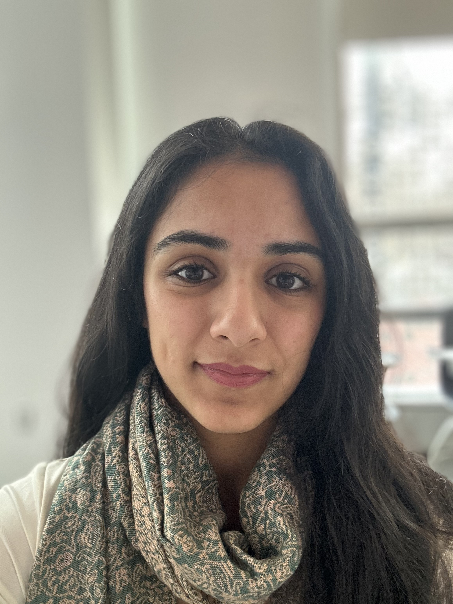

Hello, my name is Arushi Aggarwal and I am a third year undergraduate
student at Northeastern University. I am majoring in Computer Science
and minoring in Robotics. I am passionate about the ability of physical
software to assist people in their daily lives. I am particularly
interested in Human-Robot Interaction and the different ways in which
people are or aren't willing to interact with robots based on their
physical and social presentation. I am also a published researcher in
the field of Human-Robot Interaction as well as Animal-Computer
Interaction, with work soon to be available in HRI'26 and CHI'26
proceedings respectively. These projects are parts of two separate
Northeastern University labs, the PARCS Lab with Professor Zhi Tan and
the INTERACT Animal Lab with Professor Rebecca Kleinberger.
Outside of academics, I am currently very interested in laser cutting. I
have made a series of projects spanning earrings, trivets, coasters,
bowls, and more. These projects are mostly made of medium density
fiberboard (MDF) and are designed in Adobe Illustrator before being cut
on a laser cutter as provided by Northeastern University. Additionally,
I am a frequent baker, and enjoy creating a variety of things from
cookies to cakes to bread. I am interested in ceramics and am looking to
find a way to pursue that interest in the future.
I can be reached at aggarwal.arus@northeastern.edu